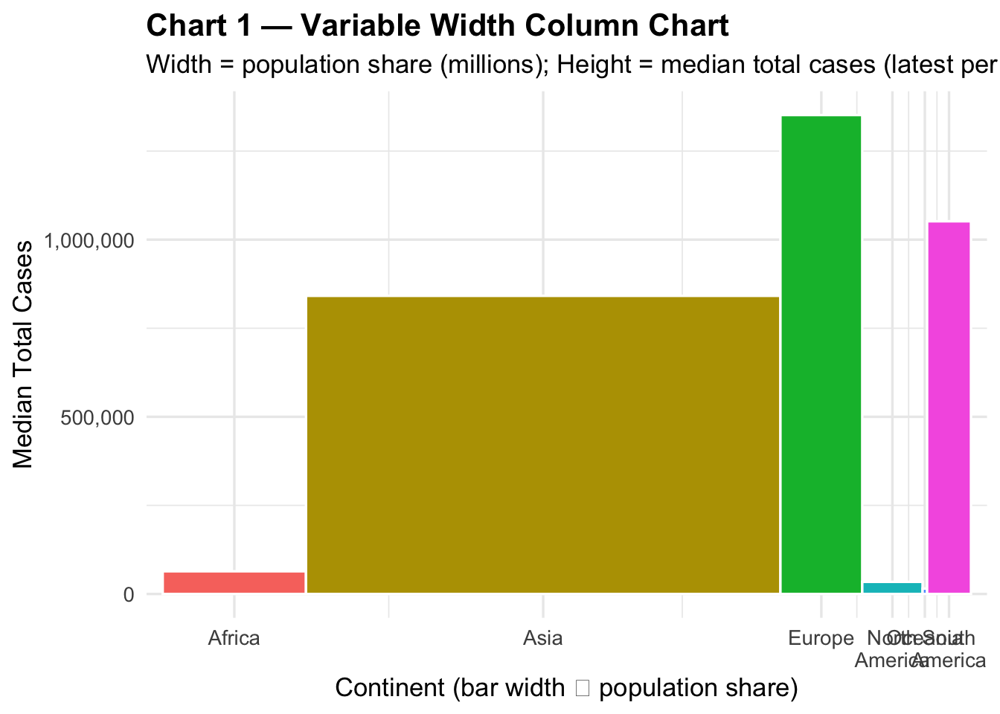

#install.packages("quarto")
# Charts #1–#4 | Alternative robust version (no tidytext)
suppressPackageStartupMessages({
library(readr); library(dplyr); library(tidyr)
library(ggplot2); library(scales); library(lubridate)
library(stringr); library(forcats)
})
options(scipen = 999)
# ---------- 0) Load & clean ----------
csv_path <- "/Users/jingtao/Desktop/FALL 2025/DATA VISUALIZATION/Jing Tao/owid-covid-data.csv"
owid <- read_csv(csv_path, show_col_types = FALSE)
need <- c("continent","location","date","population","total_cases","gdp_per_capita")
stopifnot(all(need %in% names(owid)))
latest <- owid %>%
select(all_of(need)) %>%
filter(!is.na(continent), !is.na(population), population > 0) %>%
mutate(date_clean = ymd(str_sub(as.character(date), 1, 10), quiet = TRUE)) %>%
filter(!is.na(date_clean)) %>%
group_by(location) %>%
slice_max(order_by = date_clean, n = 1, with_ties = FALSE) %>%
ungroup()
df <- latest %>%
transmute(
Continent = continent,
Country = location,
Population = as.numeric(population) / 1e6, # 百万人
Cases = as.numeric(total_cases),
GDP = as.numeric(gdp_per_capita)
)
if (!dir.exists("outputs")) dir.create("outputs", recursive = TRUE)
stamp <- format(Sys.time(), "%Y%m%d_%H%M%S")
save_png <- function(p, name, w=12, h=7, dpi=300){
fn <- file.path("outputs", paste0(name, "_", stamp, ".png"))
ggsave(fn, p, width=w, height=h, dpi=dpi); message("Saved: ", fn)
}
# Chart 1 — Variable Width Column
wrap_cont <- function(x) gsub(" ", "\n", x)
mekko <- df %>%
group_by(Continent) %>%
summarise(
pop_sum = sum(Population, na.rm = TRUE),
cases_median = median(Cases, na.rm = TRUE),
.groups = "drop"
) %>%
arrange(Continent) %>%
mutate(
width_share = pop_sum / sum(pop_sum),
xmin = lag(cumsum(width_share), default = 0),
xmax = cumsum(width_share),
xmid = (xmin + xmax) / 2,
Cont_lbl = wrap_cont(Continent)
)
p1 <- ggplot(mekko) +
geom_rect(aes(xmin=xmin, xmax=xmax, ymin=0, ymax=cases_median, fill=Continent),
color="white") +
scale_x_continuous(breaks=mekko$xmid, labels=mekko$Cont_lbl, expand=c(0.02,0)) +
scale_y_continuous(labels=label_comma()) +
labs(
title="Chart 1 — Variable Width Column Chart",
subtitle="Width = population share (millions); Height = median total cases (latest per country)",
x="Continent (bar width ∝ population share)", y="Median Total Cases"
) +
theme_minimal(base_size=13) +
theme(legend.position="none", plot.title=element_text(face="bold"))
print(p1)
save_png(p1, "A4_chart1_mekko")Saved: outputs/A4_chart1_mekko_20251029_211618.png